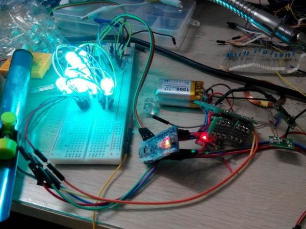

2015-08-04 - Nº 14
Editorial
Aqui está a Newsletter Nº 14 no seu formato habitual.
Esta Newsletter encontra-se mais uma vez disponível no sistema documenta do altLab. Todas as Newsletters encontram-se indexadas no link.
Esta Newsletter tem os seguintes tópicos:
- Novidades da Semana
- Ciência e Tecnologia
- Cursos MOOC
- Modelos 3D
- Open Source
- Circuitos
- Artigo do Maker
- Compras
Nesta semana que ficou marcada pelo lançamento do Windows 10 e pelo anúncio de uma nova tecnologia de memórias RAM iremos construir circuitos para receção de infravermelhos, um projecto de maker que é uma caixa de Luz e uma ferramenta open source para guardar de forma segura as nossas senhas.
 João Alves ([email protected])
João Alves ([email protected])
O conteúdo da Newsletter encontra-se sob a licença  Creative Commons Attribution-NonCommercial-ShareAlike 4.0 International License.
Creative Commons Attribution-NonCommercial-ShareAlike 4.0 International License.
Novidades da Semana ^
3D XPoint - Intel and Micron Produce Breakthrough Memory Technology
"Intel Corporation and Micron Technology, Inc. today unveiled 3D XPoint™ technology, a non-volatile memory that has the potential to revolutionize any device, application or service that benefits from fast access to large sets of data. Now in production, 3D XPoint technology is a major breakthrough in memory process technology and the first new memory category since the introduction of NAND flash in 1989. The explosion of connected devices and digital services is generating massive amounts of new data. To make this data useful, it must be stored and analyzed very quickly, creating challenges for service providers and system builders who must balance cost, power and performance trade-offs when they design memory and storage solutions. 3D XPoint technology combines the performance, density, power, non-volatility and cost advantages of all available memory technologies on the market today. The technology is up to 1,000 times faster and has up to 1,000 times greater endurance3 than NAND, and is 10 times denser than conventional memory."
Windows 10 available in 190 countries as a free upgrade
"Microsoft Corp. announced that Windows 10 will become available Wednesday as a free upgrade or with new PCs and tablets. Windows 10 includes innovations such as Cortana, an Xbox app and Microsoft Edge for a familiar, yet more personal and productive, experience. The most secure Windows ever, Windows 10 is delivered as a service and kept automatically up-to-date with innovations and security updates. Windows 10 offers one experience that will become available on the broadest range of devices, including PCs, tablets, phones, Raspberry Pi, Xbox One, HoloLens and more — with more than 2,000 devices or configurations already in testing. The new Windows Store and Windows Software Development Kit also become available Wednesday, opening the door to new and innovative app experiences on Windows 10."
-
"The MagPi is the official Raspberry Pi magazine. It offers the latest news, reviews, features and tutorials dedicated to the world’s favourite credit card-sized PC. Featured in The MagPi Issue 36: Get started with the Raspberry Pi, 3D print with Raspberry Pi, Retro classics rediscovered, Minecraft Splat, and more..."
Ciência e Tecnologia ^
-
"At the Association for Computing Machinery’s Programming Language Design and Implementation conference this month, MIT researchers presented a new system that repairs dangerous software bugs by automatically importing functionality from other, more secure applications. Remarkably, the system, dubbed CodePhage, doesn’t require access to the source code of the applications whose functionality it’s borrowing. Instead, it analyzes the applications’ execution and characterizes the types of security checks they perform. As a consequence, it can import checks from applications written in programming languages other than the one in which the program it’s repairing was written."
3D-printed Robot is Hard at Heart, Soft on Outside
"Engineers at Harvard University and the University of California, San Diego, have created the first robot with a 3D-printed body that transitions from a rigid core to a soft exterior. The robot is capable of more than 30 untethered jumps and is powered by a mix of butane and oxygen. Researchers describe the robot’s design, manufacturing and testing in the July 10 issue of Science magazine."
Researchers Build a Transistor from a Molecule and a Few Atoms
"An international team of physicists has used a scanning tunneling microscope to create a minute transistor consisting of a single molecule and a small number of atoms. The observed transistor action is markedly different from the conventionally expected behavior and could be important for future device technologies as well as for fundamental studies of electron transport in molecular nanostructures. The physicists represent the Paul-Drude-Institut für Festkörperelektronik (PDI) and the Freie Universität Berlin (FUB), Germany, the NTT Basic Research Laboratories (NTT-BRL), Japan, and the U.S. Naval Research Laboratory (NRL). Their complete findings are published in the 13 July 2015 issue of the journal Nature Physics."
Cursos MOOC ^
- Introduction to Robotics - Começa a 10 de Agosto.
- An Introduction to Interactive Programming in Python (Part 1) - Começa a 29 de Agosto.
- An Introduction to Interactive Programming in Python (Part 2) - Começa a 29 de Agosto.
- Technology Entrepreneurship - Começa a 16 de Setembro.
- Begin Robotics - Começa a 21 de Setembro.
Modelos 3D ^
Com a disponibilidade de ferramentas que permitem dar azo a nossa imaginação na criação de peças 3D e espaços como o thingiverse para as publicar, esta rubrica apresenta alguns modelos selecionados que poderão ser úteis.
Customizeable Cable Spool Organizer (http://www.thingiverse.com/thing:435802)
Inspired by cheewee2000's Cable Spool (http://www.thingiverse.com/thing:427024) but wanting smaller file sizes I designed a derivative of the part in OpenSCAD (http://www.openscad.org/) and decided to make it customizeable so you can change it as needed!
Customizable Funnel (http://www.thingiverse.com/thing:49597)
This customizable funnel design can be used to create any funnel you should need, with custom opening sizes, height, wall thickness, and bands on the top and bottom.
Tetris Bookshelf (http://www.thingiverse.com/thing:46862)
I was thinking this would make a nice shelf for camera lenses or other small objects. But my printer isn't large enough so I made a miniature test version instead.
Open Source ^
KeePass
As Senhas e a dificuldade em memorizar as mesmas leva-nos hoje à aplicação open source da semana. O KeePass é um "armazenador" de senhas. Isto permite que possamos com segurança (q.b.) termos uma senha diferente para cada site/serviço que usamos e mais importante que isso ter essa informação sempre acessível a partir de um computador ou mesmo de um smartphone. Desenvolvido por Dominik Reichl esta aplicação usa uma espécie de base de dados para guardar as nossas senhas que por sua vez se encontra cifrada com uma senha "mestre" usando os melhores algoritmos de cifra atualmente conhecidos - o AES e o Twofish.
Esta ferramenta open source pode ser descarregada deste link.
Existem duas versões para Windows, a 1.xx que se encontra atualmente na 1.29 e que é totalmente escrita em C e existe a versão 2.xx que se encontra atualmente na versão 2.29 e que é escrita em C#.
O autor não desenvolve as versões para outros tipos de dispositivos mas existem para: PocketPC, Windows Phone 7/8.1, Android, iPhone, Mac OS X, Chromebook, Blackberry, Browser, Linux, Palm OS e J2ME. Os links para estas versões encontram-se também disponíveis no site do Keepass.
Esta ferramenta embora tenha um objectivo bastante concreto encontra-se cheia de funcionalidades:
- Segurança Forte.
- O Keepass usa o AES - Rijndael e o algoritmo Towfish para encriptar as bases de dados.
- Toda a base de dados é encriptada.
- É usado o algoritmo de hash SHA-256 para a senha mestre.
- Proteção de senhas em memória.
- Os controlos edição do Keepass estão protegidos do Sistema Operativo.
- A senha mestre é apresentada num desktop seguro.
- Múltiplas Chaves de Utilizador
- Uma senha mestre desencripta a base de dados completa.
- Alternativamente podem ser usados ficheiros cujo conteúdo serve de chave.
- Podem ser combinados ambos os métodos.
- Transportável e sem necessidade de instalação
- O Keepass tem tudo o que precisa para ser executado fazendo dele transportável.
- O Keepass 1.xx requer apenas o GDI+ (apenas necessário para sistemas anteriores ao XP).
- O Keepass 2.xx requer o Microsoft .NET ou o Mono.
- Existem ports para outros sistemas como referido anteriormente
- Exportação da informação para outros formatos como TXT, HTML, XML, e CSV
- A informação das senhas pode ser exportada para vários formatos como TXT, HTML, XML e CSV.
- O formato XML pode facilmente ser usado noutras ferramentas.
- O Formato CSV é compativel com outros sistemas de guarda de senhas.
- Outros formatos são suportados por plugins.
- Importação de diversos formatos
- O Keepass usa o formato CSV exportado por outros programas para fazer a importação.
- O Keepass pode fazer a leitura e importação do formato TXT de outras ferramentas comerciais.
- A versão 2.xx pode importar a partir de mais de 35 formatos.
- Outros formatos poderão ser suportados através de plugins.
- Fácil transferência da base de dados
- A base de dados de senhas é constituída por um único ficheiro.
- Suporte de grupos de senhas
- As senhas pode ser agrupadas em pastas de forma simples
- Os grupos podem ser organizados como uma arvore, com sub-grupos, etc.
- Campos de Tempo e de anexos
- O Keepass suporta campos de data de criação, data de alteração, ultima data de acesso e data de expiração
- Podem ser anexados ficheiros às entradas das senhas (útil para guardar assinaturas PGP)
- A versão 2.xx tem um potente editor de ficheiros de texto, imagem e documentos. Nem sequer é necessário exportar o ficheiros anexados para os ver ou alterar.
- Escrita automática, Drag&Drop
- O Keepass pode minimizar-se a si próprio e digitar a informação das entradas selecionadas em caixa de dialogo, formulários web, etc.
- A sequência de escrita é 100% costumizável
- Suporte de uma tecla global para fazer a auto-escrita.
- Todos os campos podem ser "largados" por Drag&Drop noutras janelas.
- Gestão do clipboard intuitiva e segura
- Basta fazer duplo clique em qualquer campo que ele será copiado para o clipboard.
- O clipboard é limpo ao fim de algum tempo para evitar utilizações abusivas.
- Pesquisa e Ordenação
- Podem ser feitas pesquisas por entradas específicas.
- Pode ser feita a ordenação por qualquer coluna clicando na mesma.
- Suporte Multi-língua
- Existem cerca de 30 línguas diferentes suportadas
- Podem ser acrescentadas com facilidade línguas adicionais
- Gerador de senhas fortes
- O Keepass tem capacidade de gerar senhas fortes.
- Pode ser definido qual o comprimento e tipo de caracteres que o gerador pode usar.
- O algoritmo de Randomização usa dados do teclado e do rato para a inicialização.
- Arquitetura de plugins
- Outras pessoas pode extender o Keepass escrevendo plugins.
- Os Plugins podem extender a funcionalidade do Keepass como novos métodos de importação e exportação.
- Existem diversos plugins disponiveis na pagina: Para Backup e sincronização, Integração e transferência, Utilitários, Importação, Exportação, Métodos alternativos de encriptação, Automação, etc.
Dica:
Uma das formas de usar o Keepass é por exemplo colocá-lo numa drive partilhada tipo Dropbox ou Google Drive e a partir daí o ficheiro com as senhas pode ser acedido e atualizado a partir de qualquer lado.
Links úteis:
- KeePass Tutorial for the Absolute Newbie
- First Steps Tutorial - KeePass
- KeePass, why and how to use it effectively
Circuitos ^
Aqui é apresentado um circuito simples que poderá ser construído com componentes.
Infrared Detector
No circuito de hoje iremos construir o detector de infravermelhos. Adicionalmente iremos construir um circuito para detetar o tipo de frequência e a que fabricante pertencem os códigos. Este ultimo recorre a utilização de um Arduino e de uma biblioteca para obter esta informação.
A luz infravermelho que tem um comprimento de onda que se situa entre os 870 nm e os 930-950 nm. Foram desenvolvidos alguns protocolos por empresas que comercializam de electrónica de consumo como a Philips com o RC-5 e o RC-6. Tipicamente estes protocolos usam uma trama (stream) de bits codificada através do código Manchester ou outro modulando uma portadora de 36 kHz ou 38 kHz.
Infelizmente não existe um standard e as bibliotecas têm que implementar os protocolos de cada um dos fabricantes.
Esquemático
Componentes (BOM):
Circuito 1:
- 1x NPN Transístor 2N2222 (Q1)
- 1x Resistência de 1K Ohms (R1)
- 1x Resistência de 100 Ohms (R2)
- 1x Infrared Receiving Diode LED (D1)
- 1x LED 3mm (D2)
Circuito 2:
- 1x IR Receiver Module TSOP2438 (U1)
Pin-out dos IC
Código
Encontrei várias fontes de informação interessantes de partilhar.
O primeiro sketch não usa qualquer biblioteca e permite observar a codificação em RAW. Este sketch foi publicado neste site.
/* Raw IR decoder sketch!
This sketch/program uses the Arduno and a TSOP2438 to
decode IR received. This can be used to make a IR receiver
(by looking for a particular code)
or transmitter (by pulsing an IR LED at ~38KHz for the
durations detected
Code is public domain
*/
// We need to use the 'raw' pin reading methods
// because timing is very important here and the digitalRead()
// procedure is slower!
//uint8_t IRpin = 2;
// Digital pin #2 is the Pin D19 on the Mega2560(PD2)
// see http://arduino.cc/en/Hacking/PinMapping168 for the
// UNO pin mapping with ATMega168/328
#define IRpin_PIN PIND
#define IRpin 2
// the maximum pulse we'll listen for - 65 milliseconds is a long time
#define MAXPULSE 65000
// what our timing resolution should be, larger is better
// as its more 'precise' - but too large and you wont get
// accurate timing
#define RESOLUTION 20
// we will store up to 100 pulse pairs (THIS IS A LOT)
uint16_t pulses[100][2]; // pair is high and low pulse
uint8_t currentpulse = 0; // index for pulses we're storing
void setup(void) {
Serial.begin(9600);
Serial.println("Ready to decode IR!");
}
void loop(void) {
uint16_t highpulse, lowpulse; // temporary storage timing
highpulse = lowpulse = 0; // start out with no pulse length
// while (digitalRead(IRpin)) { // this is too slow!
while (IRpin_PIN & _BV(IRpin)) {
// pin is still HIGH
// count off another few microseconds
highpulse++;
delayMicroseconds(RESOLUTION);
// If the pulse is too long, we 'timed out' - either nothing
// was received or the code is finished, so print what
// we've grabbed so far, and then reset
if ((highpulse >= MAXPULSE) && (currentpulse != 0)) {
printpulses();
currentpulse=0;
return;
}
}
// we didn't time out so lets stash the reading
pulses[currentpulse][0] = highpulse;
// same as above
while (! (IRpin_PIN & _BV(IRpin))) {
// pin is still LOW
lowpulse++;
delayMicroseconds(RESOLUTION);
if ((lowpulse >= MAXPULSE) && (currentpulse != 0)) {
printpulses();
currentpulse=0;
return;
}
}
pulses[currentpulse][1] = lowpulse;
// we read one high-low pulse successfully, continue!
currentpulse++;
}
void printpulses(void) {
Serial.println("\n\r\n\rReceived: \n\rOFF \tON");
for (uint8_t i = 0; i < currentpulse; i++) {
Serial.print(pulses[i][0] * RESOLUTION, DEC);
Serial.print(" usec, ");
Serial.print(pulses[i][1] * RESOLUTION, DEC);
Serial.println(" usec");
}
}
// Sketch uses 2,354 bytes (7%) of program storage space. Maximum is 32,256 bytes.
// Global variables use 659 bytes (32%) of dynamic memory, leaving 1,389 bytes for local variables. Maximum is 2,048 bytes.
O segundo código para o Arduino foi desenvolvido pelo Ken Shirriff e o sketch apresentado é um dos exemplos que vem na biblioteca dele - IRremote.
Esta biblioteca pode ser descarregada do seguinte link. Pode igualmente ser descarregado daqui.
/*
* IRremote: IRrecvDump - dump details of IR codes with IRrecv
* An IR detector/demodulator must be connected to the input RECV_PIN.
* Version 0.1 July, 2009
* Copyright 2009 Ken Shirriff
* http://arcfn.com
* JVC and Panasonic protocol added by Kristian Lauszus (Thanks to zenwheel and other people at the original blog post)
* LG added by Darryl Smith (based on the JVC protocol)
*/
#include <IRremote.h>
int RECV_PIN = 11;
IRrecv irrecv(RECV_PIN);
decode_results results;
void setup()
{
Serial.begin(9600);
irrecv.enableIRIn(); // Start the receiver
}
// Dumps out the decode_results structure.
// Call this after IRrecv::decode()
// void * to work around compiler issue
//void dump(void *v) {
// decode_results *results = (decode_results *)v
void dump(decode_results *results) {
int count = results->rawlen;
if (results->decode_type == UNKNOWN) {
Serial.print("Unknown encoding: ");
}
else if (results->decode_type == NEC) {
Serial.print("Decoded NEC: ");
}
else if (results->decode_type == SONY) {
Serial.print("Decoded SONY: ");
}
else if (results->decode_type == RC5) {
Serial.print("Decoded RC5: ");
}
else if (results->decode_type == RC6) {
Serial.print("Decoded RC6: ");
}
else if (results->decode_type == PANASONIC) {
Serial.print("Decoded PANASONIC - Address: ");
Serial.print(results->panasonicAddress,HEX);
Serial.print(" Value: ");
}
else if (results->decode_type == LG) {
Serial.print("Decoded LG: ");
}
else if (results->decode_type == JVC) {
Serial.print("Decoded JVC: ");
}
Serial.print(results->value, HEX);
Serial.print(" (");
Serial.print(results->bits, DEC);
Serial.println(" bits)");
Serial.print("Raw (");
Serial.print(count, DEC);
Serial.print("): ");
for (int i = 0; i < count; i++) {
if ((i % 2) == 1) {
Serial.print(results->rawbuf[i]*USECPERTICK, DEC);
}
else {
Serial.print(-(int)results->rawbuf[i]*USECPERTICK, DEC);
}
Serial.print(" ");
}
Serial.println("");
}
void loop() {
if (irrecv.decode(&results)) {
Serial.println(results.value, HEX);
dump(&results);
irrecv.resume(); // Receive the next value
}
}
// Sketch uses 10,618 bytes (32%) of program storage space. Maximum is 32,256 bytes.
// Global variables use 628 bytes (30%) of dynamic memory, leaving 1,420 bytes for local variables. Maximum is 2,048 bytes.
Links úteis:
- Consumer IR
- A Multi-Protocol Infrared Remote Library for the Arduino
- IR Remote Control Theory
- IR Control Kit Hookup Guide
Artigo do Maker ^
Projeto interessante publicado por um maker.
LightBoxII
Esta semana apresentamos um projeto de maker que é uma caixa de luz mágica. Este projeto foi feito pelo maker Xie linhong do maker space i-element. Os detalhes do mesmo encontram-se publicados no site da seeedstudios e no site do i-element.
O vídeo publicado no youtube apresenta o projeto a funcionar.
Items necessários
Para se construir o projeto são necessários os seguintes componentes:
- 1x Arduino Nano
- 1x ADXL345
- 1x modulo de carregamento Wireless
- 1x DC-DC 5V boost module
- 2x 3.7V lithium-ion battery 952240
- 20x Common anode RGBled
- Resistência de 5 ohms
- Resistência de 100 ohms
- 3 x NPN transistor 8050
- 1 x 5.5mmDC Power Interface (round mouth)
- 1 x 12VDC power adapter
Esquemático
R1 - 5 ohms R2 - 100 ohms
Modos
O projeto funciona em três modos de luz:
- Abanar na direção do X - Modo de cor branca
- Abanar na direção do Y - Alteração automática da cor
- Abanar na direção do Z - Mudar de acordo com a atitude
Passos de montagem
Ligar os módulos de acordo com o esquemático
Testar o circuito

Adicionar cola para proteger o circuito
Para prevenir que haja curtos circuitos proteger o Arduino Nano com cola liquida. Podem também ser cortados alguns pinos para evitar esses contactos e poupar espaço. Quando estiver colado é impossível usar o Nano para outros projectos por isso deverá cortar os pinos não usados.
O acrílico e os LEDs RGBled
Para produzir as peças acrílicas deverá descarregar o ficheiro com os DWGs para os produzir. A espessura do acrílico é de 1.7mm.
Instalando os LEDs RGBled
Os 20 LEDs são ligados em paralelo, a instalação dos pinos deve ser feita através do acrílico, verificar a polaridade dos pinos.
Testar a parte eletrónica
Ligar de acordo com a imagem acima
Instalar o cubo interno
Ligar as placas com cola quente para criar o cubo interno de LED
Instalar o cubo de LED na caixa de acrilico
colocar a parte inferior e a bobine de carregamento no centro da base.
Instalar o resto do cubo
Colar as partes do cubo exterior e instalar o cubo de LEDs dentro dele.
Estação de Carregamento
A estação de carregamento é muito simples de montar. Ligar a ficha DC ao modulo de transmissão e colocar tudo dentro da base.
Código
O código usa a biblioteca MsTimer2 que se encontra aqui. Também pode ser descarregada neste link.
#include <MsTimer2.h> //call the timer library
#include <Wire.h>
#define Register_ID 0
#define Register_2D 0x2D
#define Register_X0 0x32
#define Register_X1 0x33
#define Register_Y0 0x34
#define Register_Y1 0x35
#define Register_Z0 0x36
#define Register_Z1 0x37
int ADXAddress = 0xA7 >> 1;
//Storage variable of acceleration information
int X0, X1, Xg;
int Y0, Y1, Yg;
int Z1, Z0, Zg;
//the Pin corresponding to three colors
int ledx = 9;
int ledy = 5;
int ledz = 6;
//state 7 counter
int counterX, counterY, counterZ, counterT, counterx, countery, counterz;
//3 variable to record status
int stateX, stateY, stateZ;
//The 3 variable of initial intensity of the three colors in discoloration
int valx = 60;
int valy = 130;
int valz = 195;
//Under the state of three colors from color change speed
int fadeAmount1 = 3;
int fadeAmount2 = 6;
int fadeAmount3 = 9;
void setup() {
// Serial.begin(9600); //You can start serial procedures to facilitate debugging
// The initialization
Wire.begin();
delay(10);
Wire.beginTransmission(ADXAddress);
Wire.write(Register_2D);
Wire.write(8);
Wire.endTransmission();
pinMode(ledx, OUTPUT);
pinMode(ledy, OUTPUT);
pinMode(ledz, OUTPUT);
counterY = 0;
counterX = 0;
counterT = 0;
//X, Y, Z axis trigger the states are disabled
stateX = 0;
stateY = 0;
stateZ = 0;
}
void loop() {
//All Off
digitalWrite(ledx, 0);
digitalWrite(ledy, 0);
digitalWrite(ledz, 0);
//Start reading X, Y, Z axis acceleration
Wire.beginTransmission(ADXAddress);
Wire.write(Register_X0);
Wire.write(Register_X1);
Wire.endTransmission();
Wire.requestFrom(ADXAddress, 2);
if (Wire.available() <= 2);
{
X0 = Wire.read();
X1 = Wire.read();
X1 = X1 << 8;
Xg = X0 + X1;
}
Wire.beginTransmission(ADXAddress);
Wire.write(Register_Y0);
Wire.write(Register_Y1);
Wire.endTransmission();
Wire.requestFrom(ADXAddress, 2);
if (Wire.available() <= 2);
{
Y0 = Wire.read();
Y1 = Wire.read();
Y1 = Y1 << 8;
Yg = Y0 + Y1;
}
Wire.beginTransmission(ADXAddress);
Wire.write(Register_Z0);
Wire.write(Register_Z1);
Wire.endTransmission();
Wire.requestFrom(ADXAddress, 2);
if (Wire.available() <= 2);
{
Z0 = Wire.read();
Z1 = Wire.read();
Z1 = Z1 << 8;
Zg = Z0 + Z1;
}
//Analyzing X-axis acceleration has reached a threshold value, to reach the counter X from plus
if (Xg >= 500 || Xg <= -500) {
counterX++;
//If the counter X starts counting, then the timer is started, 0.5 seconds after entering the clearing function
if (counterX == 1) {
MsTimer2::set(500, Clear);
MsTimer2::start();
}
}
//If the clear function before the count reaches 16 or more, it opens the X-axis trigger status (enter from discolored state)
if (counterX >= 16) { //16 can be changed to other numbers, the smaller the number the higher the sensitivity
stateX = !stateX;
while (stateX == 1) {
fading();
}
}
if (Yg >= 500 || Yg <= -500) {
// checking Y
counterY++;
if (counterY == 1) {
MsTimer2::set(500, Clear);
MsTimer2::start();
}
}
if (counterY >= 16) {
stateY = !stateY;
while (stateY == 1) {
following();
}
}
if (Zg >= 500 || Zg <= -500) {
// checking Z
counterZ++;
if (counterZ == 1) {
MsTimer2::set(500, Clear);
MsTimer2::start();
}
}
if (counterZ >= 14) {
stateZ = !stateZ;
while (stateZ == 1) {
white();
}
}
delay(6);
// Serial.print("X=");
// Serial.print(Xg);
// Serial.print(" Y=");
// Serial.print(Yg);
// Serial.print(" Z=");
// Serial.print(Zg);
// Serial.print(" CX=");
// Serial.print(counterX);
// Serial.print(" CY=");
// Serial.print(counterY);
// Serial.print(" CZ=");
// Serial.println(counterZ);
}
void Clear() {
//All the counter is cleared
counterX = 0;
counterx = 0;
counterY = 0;
countery = 0;
counterZ = 0;
counterz = 0;
}
void white() {
//White Program
digitalWrite(ledx, 1);
digitalWrite(ledy, 1);
digitalWrite(ledz, 1);
//Read Z axis acceleration
Wire.beginTransmission(ADXAddress);
Wire.write(Register_Z0);
Wire.write(Register_Z1);
Wire.endTransmission();
Wire.requestFrom(ADXAddress, 2);
if (Wire.available() <= 2);
{
Z0 = Wire.read();
Z1 = Wire.read();
Z1 = Z1 << 8;
Zg = Z0 + Z1;
}
if (Zg >= 500 || Zg <= -500) {
counterz++;
if (counterz == 1) {
MsTimer2::set(500, Clear);
MsTimer2::start();
}
}
//If the counter Z count reaches 140 or more, you close the Z axis trigger state, return to the main program
if (counterz >= 140) {
stateZ = !stateZ;
return;
}
// Serial.print("Z=");
// Serial.print(Zg);
// Serial.print(" CZ=");
// Serial.println(counterz);
}
void following() {
//Follow attitude discolored program
int xfollow, yfollow, zfollow;
Wire.beginTransmission(ADXAddress);
Wire.write(Register_X0);
Wire.write(Register_X1);
Wire.endTransmission();
Wire.requestFrom(ADXAddress, 2);
if (Wire.available() <= 2);
{
X0 = Wire.read();
X1 = Wire.read();
X1 = X1 << 8;
Xg = X0 + X1;
}
Wire.beginTransmission(ADXAddress);
Wire.write(Register_Y0);
Wire.write(Register_Y1);
Wire.endTransmission();
Wire.requestFrom(ADXAddress, 2);
if (Wire.available() <= 2);
{
Y0 = Wire.read();
Y1 = Wire.read();
Y1 = Y1 << 8;
Yg = Y0 + Y1;
}
Wire.beginTransmission(ADXAddress);
Wire.write(Register_Z0);
Wire.write(Register_Z1);
Wire.endTransmission();
Wire.requestFrom(ADXAddress, 2);
if (Wire.available() <= 2);
{
Z0 = Wire.read();
Z1 = Wire.read();
Z1 = Z1 << 8;
Zg = Z0 + Z1;
}
//Limited X, Z-axis value to avoid color transitions, Y-axis due to the reserved judgment exit the program it is not limited
Xg = constrain(Xg, -272, 272);
// Yg = constrain(Yg, -272, 272);
Zg = constrain(Zg, -272, 272);
xfollow = map(Xg, -272, 272, 5, 250);
analogWrite(ledx, xfollow);
yfollow = map(Yg, -290, 290, 5, 250);
analogWrite(ledy, yfollow);
zfollow = map(Zg, -272, 272, 5, 250);
analogWrite(ledz, zfollow);
//Prevent overflow resulting color transition
xfollow = constrain(xfollow, 1, 255);
yfollow = constrain(yfollow, 1, 255);
zfollow = constrain(zfollow, 1, 255);
if (Yg >= 500 || Yg <= -500) {
countery++;
if (countery == 1) {
MsTimer2::set(500, Clear);
MsTimer2::start();
}
}
if (countery >= 40 ) {
stateY = !stateY;
return;
}
// Serial.print("Y=");
// Serial.print(Yg);
// Serial.print(" CY=");
// Serial.println(countery);
}
void fading() {
//discoloration functions
analogWrite(ledx, valx);
analogWrite(ledy, valy);
analogWrite(ledz, valz);
valx = valx + fadeAmount1;
valy = valy + fadeAmount2;
valz = valz + fadeAmount3;
if (valx <= 4 || valx >= 252) {
fadeAmount1 = -fadeAmount1 ;
}
if (valy <= 7 || valy >= 249) {
fadeAmount2 = -fadeAmount2 ;
}
if (valz <= 10 || valz >= 246) {
fadeAmount3 = -fadeAmount3 ;
}
delay(90);
Wire.beginTransmission(ADXAddress);
Wire.write(Register_X0);
Wire.write(Register_X1);
Wire.endTransmission();
Wire.requestFrom(ADXAddress, 2);
if (Wire.available() <= 2);
{
X0 = Wire.read();
X1 = Wire.read();
X1 = X1 << 8;
Xg = X0 + X1;
}
if (Xg >= 500 || Xg <= -500) {
counterx++;
if (counterx == 1) {
MsTimer2::set(500, Clear);
MsTimer2::start();
}
}
if (counterx >= 2) {
stateX = !stateX;
return;
}
// Serial.print("X=");
// Serial.print(Xg);
// Serial.print(" CX=");
// Serial.println(counterx);
}
Outros artigos/projetos interessantes de ler:
- Low Cost IR Decoder
- Receiving Weather Satellite Images With An £8 Dongle
- NeoPixel Heart Beat Display
- Arduino LCD Master Clock
- 7 Segment Multiplexing With ULN2003 & PNP Transistors
- Soldering Iron PID Temperature Controller
Compras ^
Artigos do ebay ou de outras lojas online que poderão ser úteis em projetos.
1pcs ADXL345 Digital Output Tilt Sensor Accelerometer Module
(http://www.ebay.co.uk/itm/281520781365) - US $1.65

Description:
- On-board ADXL345 digital output(support the I2C/SPI), low-power, compact acceleration sensor.
- Support 5V/3.3V voltage input, on-board RT9161 power chip, lower pressure drop faster than the 1117, faster load speed of response, very suitable for high-noise power supply environment.
- Common pins are leaded out, pins standard 100mil (2.54mm), convenient for the dot matrix board.
- PCB size: 28 (mm) x14 (mm).
Lot 20pcs 10mm 4pin RGB Red Green Blue LED Diffused Common Anode DIY Project HM
(http://www.ebay.co.uk/itm/181757705847) - US $3.98
Features:
- Qty: 20pcs per pack
- Size: 10mm
- Emitting color: Red/Green/Blue
- Pins sequence: RED/Common Anode (positive terminal)/Green/Blue
- Lens Color : Diffused
- Luminous Intensity: 12000/24000/20000mcd
- Forward Voltage (V) : 2.1~3.4
- View Angle: 20-25
- Recommended resistance: 330 to 1K Ohms with 5.0V to 12.0V operating voltage
50Pcs New 940nm 5mm IR Infrared Receiving Diode LED Lamp Infrared Receiver Head
(http://www.ebay.co.uk/itm/271576312516) - £1.99
Description
- Emitted Colour : Infrared
- Lens Color : Black Clear
- Forward Voltage : 1.2-1.4V
- Forward Current : 100mA
- Wavelength: 940nm
- Size: 5mm
Packing List:
50PCS 5mm 940nm IR infrared Receiving diode
10x VS1838 TL1838 VS1838B Universal Infrared Receiving Head for Remote Control
(http://www.ebay.co.uk/itm/371165148164) - £1.99
Product Details:
- Universal receiver
- Condition: New
- Infrared receiver
- Infrared remote control receiver
- TL1838 VS1838B
- Not original but with good quality
- Color: show as pictures
- PLS NOTE that due to lighting effects, monitor's brightness / contrast settings etc, there could be some slight differences in the color tone of the pictures and the actual item!
Package Included:
- 10 x Universal receiver
That's all Folks!